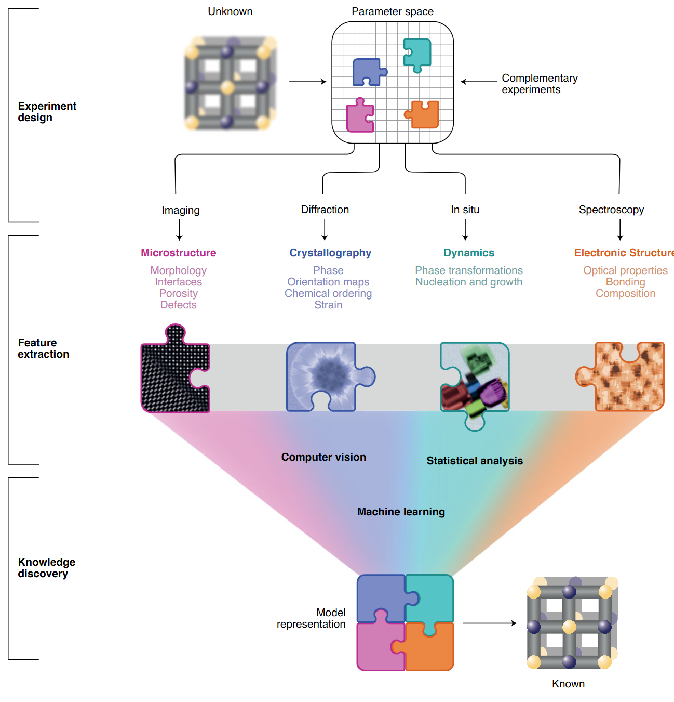
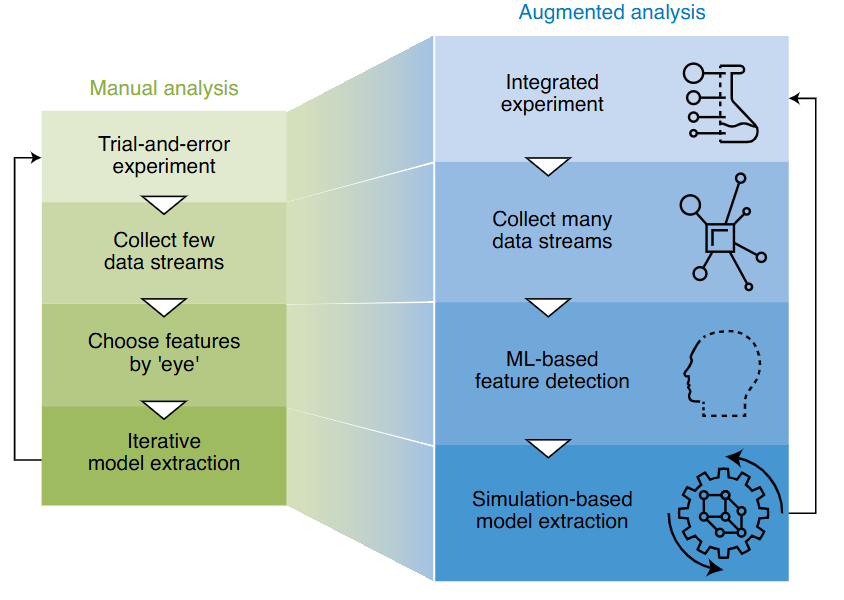

Data Science for Electron Microscopy
Week 1: Python crash course & course launch
Prof. Dr. Philipp Pelz
FAU Erlangen-Nürnberg
Institute of Micro- and Nanostructure Research


Welcome to Data Science for Electron Microscopy
- A 13-week course at the intersection of materials science, electron microscopy, and data-driven methods.
- You do not need to be a programmer — we start from zero Python today.
- By the end you will be able to build and evaluate a complete data-science pipeline on real EM data.
Course logistics
- 13 weekly lectures (≈ 90 min each), no separate exercise class.
- Assessment: 40% miniproject + 60% written exam.
- Use of AI tools (GitHub Copilot, Cursor, …) is allowed and encouraged in the miniproject.
- Course website & materials: announced in first session — all slides and notebooks are public.
- Graded miniproject: individual or pairs; proposal due ≈ Week 6, final submission in exam period.
Course arc — 13 weeks
- Weeks 1–3: Python foundations, what learning means, linear algebra & PCA
- Weeks 4–5: Regression, gradient descent, neural networks from first principles
- Weeks 6–7: CNNs for microscopy; beating small & expensive data
- Weeks 8–9: Unsupervised learning, autoencoders, uncertainty & Gaussian processes
- Weeks 10–11: Active/automated EM; imaging inverse problems I
- Weeks 12–13: Inverse problems II; explainability, trust & synthesis
The data deluge: detector rates over time

- Film era (1990s): ≈ 1 GB h⁻¹
- CCD/CMOS (2000s–2010s): 1–10 GB h⁻¹
- Direct-electron detectors (today): up to 200 TB h⁻¹
- That is a 10⁸× increase in two decades.
- No human can inspect petabyte-scale datasets by eye.
From data to insight: the three-layer framework

- Layer 1 — Experiment design: What to measure, at what dose, in what sequence.
- Layer 2 — Feature extraction: Turn raw pixel/spectrum data into structured descriptors.
- Layer 3 — Knowledge discovery: ML + simulation → structure, chemistry, dynamics.
- The layers form a feedback loop: discoveries suggest new experiments.
Manual vs. augmented EM workflow

- Manual: Choose features by eye, collect one modality, iterate slowly.
- Augmented: Collect complete data streams, ML finds features automatically, simulation validates.
- Goal: Closed-loop, autonomous experiment steering.
EM modalities — the data landscape
- HAADF-STEM: intensity ∝ Z¹·⁶–Z¹·⁹ — heavy atoms appear bright; single-atom sensitivity.
- 4D-STEM: a 2-D diffraction pattern at every probe position → 4-D data cube (x, y, kx, ky).
- EELS/EDS: energy-loss/X-ray spectra at each pixel → chemical identity at nm resolution.
- Tomography: tilt-series → 3-D atomic coordinates with pm precision.
- Each modality produces a different tensor shape — this course teaches you to handle all of them.
The PSPP paradigm
- Processing → Structure → Property → Performance
- In EM: synthesis parameters → atomic structure (images/spectra) → material property → device behaviour.
- Each arrow is a potential ML task: regression, classification, inverse design.
- Key insight: structure mediates properties — you cannot skip it.
The CRISP-DM workflow
- Business/scientific understanding — what question are we actually answering?
- Data understanding — visualise raw data before modelling.
- Data preparation — clean, normalise, split (train / val / test).
- Modelling — start with the simplest baseline; add complexity only when justified.
- Evaluation — generalisation on held-out data; does it meet Phase 1 goals?
- Deployment / monitoring — integrate into lab workflow; retrain when data drifts.
PSPP × CRISP-DM: putting it together
- Phase 1 (understanding): identify which PSPP arrow is your task.
- Phase 2–3 (data): understand the tensor shape and noise model of your EM modality.
- Phase 4 (modelling): choose a model appropriate for that tensor shape.
- Phase 5 (evaluation): measure generalisation — not training accuracy.
- Principle: domain knowledge is not optional; it goes into every phase.
Python in one slide: why Python?
- Free, open-source, runs on any OS and in your browser (Google Colab).
- Readable syntax — code that reads close to pseudocode.
- Massive ecosystem: NumPy, SciPy, matplotlib, scikit-learn, PyTorch — all the tools this course uses.
- Interactive: Jupyter notebooks let you run one cell at a time and see results immediately.
- If you know MATLAB or any scripting language, Python will feel familiar within hours.
Variables and types
# An integer
n_pixels = 512
# A float
pixel_size_nm = 0.05 # 0.05 nm per pixel
# A string
modality = "HAADF-STEM"
# Booleans
is_calibrated = True
# Check the type
print(type(pixel_size_nm)) # <class 'float'>- Variables are assigned with
=; Python infers the type automatically. - Use descriptive names —
pixel_size_nmbeatsx.
Lists: ordered collections
# A list of acquisition voltages in kV
voltages = [80, 100, 200, 300]
# Indexing — Python starts at 0!
print(voltages[0]) # 80
print(voltages[-1]) # 300 (last element)
# Slicing
print(voltages[1:3]) # [100, 200]
# Appending
voltages.append(60)
print(voltages) # [80, 100, 200, 300, 60]- Lists can hold mixed types but in science we almost always want homogeneous numerical data → use NumPy arrays (next section).
Functions: reusable operations
def normalize(image):
"""Min-max normalize an image array to [0, 1].
Note: a constant image (max==min) yields NaN; guard with
`if hi==lo: return np.zeros_like(...)` in real pipelines.
"""
img_min = image.min()
img_max = image.max()
return (image - img_min) / (img_max - img_min)
# Call it
normalized = normalize(my_stem_image)defdefines a function; the docstring ("""...""") documents what it does.- Functions should do one thing — short, named, reusable.
- Write a function the moment you find yourself copying code a second time.
NumPy: the array library
import numpy as np
# Create an array from a list
a = np.array([1.0, 2.0, 4.0, 8.0])
# Shape and data type
print(a.shape) # (4,)
print(a.dtype) # float64shapeis a tuple:(rows, cols)for 2-D;(x, y, kx, ky)for a 4D-STEM cube.dtypegoverns storage:float32(4 bytes/element) vsfloat64(8 bytes/element).
Array creation and common operations
# Zeros and ones (useful initialisers)
zeros = np.zeros((512, 512)) # blank image canvas
ones = np.ones((3, 3))
# Range and linspace
x = np.arange(0, 10, 0.5) # 0, 0.5, 1.0, …, 9.5
q = np.linspace(0, 1, 128) # 128 evenly spaced values in [0, 1]
# Random noise (Gaussian approximation — Week 2 shows why Poisson is the correct low-dose model)
noise = np.random.randn(512, 512) # Gaussian, mean=0, std=1Array indexing and slicing (EM ROI example)
# Load (simulate) a 512×512 HAADF image
stem_image = np.random.poisson(lam=200, size=(512, 512)).astype(np.float32)
print(stem_image.shape) # (512, 512)
print(stem_image.dtype) # float32
# Crop a 64×64 ROI from the centre
cx, cy = 256, 256
roi = stem_image[cy-32:cy+32, cx-32:cx+32]
print(roi.shape) # (64, 64)
# Single pixel value
print(stem_image[0, 0]) # top-left pixel- Slicing syntax:
array[start:stop]— stop is exclusive. - Negative indices count from the end:
stem_image[-1, :]is the last row.
Broadcasting: operations between different shapes
image = np.random.poisson(200, (512, 512)).astype(float) # (512, 512)
dark = np.array([5.0]) # scalar
# Broadcasting: scalar applies to every element
corrected = image - dark # same shape as image
# Row-wise mean subtraction
row_mean = image.mean(axis=1, keepdims=True) # shape (512, 1)
row_corrected = image - row_mean # shape (512, 512)- Rule: dimensions are compatible if they are equal or one of them is 1.
(512, 512) - (512, 1)→ the column of means is subtracted from every column.
Displaying a STEM image with matplotlib
import matplotlib.pyplot as plt
import numpy as np
# Synthetic HAADF-like image: bright atoms on dark background
stem = np.random.poisson(lam=50, size=(256, 256)).astype(float)
# Add a few "atoms" (bright spots)
for (r, c) in [(64, 64), (128, 128), (192, 64), (64, 192)]:
stem[r-4:r+4, c-4:c+4] += 500
fig, ax = plt.subplots(figsize=(5, 5))
im = ax.imshow(stem, cmap='gray', origin='upper')
plt.colorbar(im, ax=ax, label='Counts')
ax.set_title('Synthetic HAADF-STEM image')
ax.set_xlabel('x (pixels)')
ax.set_ylabel('y (pixels)')
plt.tight_layout()
plt.show()Subplots and line profiles
# Extract and plot a horizontal line profile (common in HAADF)
row = 128
profile = stem[row, :] # 1-D array of length 256
fig, axes = plt.subplots(1, 2, figsize=(10, 4))
axes[0].imshow(stem, cmap='gray')
axes[0].axhline(row, color='red', lw=1)
axes[0].set_title('STEM image')
axes[1].plot(profile)
axes[1].set_xlabel('Column (px)')
axes[1].set_ylabel('Intensity (counts)')
axes[1].set_title(f'Line profile at row {row}')
plt.tight_layout()
plt.show()What is a tensor?
- A tensor is an n-dimensional array with a fixed numeric type.
- 0-D (scalar): a single number — one pixel value.
- 1-D (vector): a spectrum — 1024 energy channels.
- 2-D (matrix): a HAADF image — shape (512, 512).
- 3-D tensor: a spectral image (EELS map) — shape (256, 256, 1024).
- 4-D tensor: a 4D-STEM scan — shape (256, 256, 128, 128).
Running code in Google Colab
- Google Colab: a free Jupyter notebook environment in your browser, GPU-enabled.
- Go to colab.research.google.com — sign in with your Google account.
- Open or upload a
.ipynbnotebook file. - Shift+Enter runs the current cell and moves to the next.
- Runtime → Change Runtime Type → GPU (for deep learning, Weeks 5+).
- All this week’s code runs without a GPU — no special setup needed.
EM example: a STEM image as a NumPy array
import numpy as np
import matplotlib.pyplot as plt
# Simulate loading a HAADF-STEM image (replace with dm3/tif in practice)
# Shape: (height, width) — here 512×512 pixels at 0.05 nm/px
np.random.seed(42)
base = np.zeros((512, 512))
# Crystalline columns on a 20 px lattice
for r in range(10, 512, 20):
for c in range(10, 512, 20):
base[r-2:r+3, c-2:c+3] = 1.0
# Add Poisson noise (realistic detector statistics)
stem_image = np.random.poisson(lam=(base * 800 + 50)).astype(np.float32)
print("Shape :", stem_image.shape) # (512, 512)
print("Dtype :", stem_image.dtype) # float32
print("Min :", stem_image.min())
print("Max :", stem_image.max())- Real files:
tifffile.imread('image.tif')orhyperspy.load('image.dm3')return the same ndarray.
The miniproject: overview
- Weight: 40% of final grade.
- Scope: Apply the full data-science pipeline (CRISP-DM) to a real or clearly-labelled synthetic EM / materials dataset.
- Required components: data provenance, model choice, uncertainty quantification, explainability.
- Fully reproducible: grader runs
jupyter nbconvert --execute notebook.ipynb— it must produce all figures without manual steps. - Team size: individual or pairs (pairs must divide contributions clearly).
Miniproject task options
- Option A — Image segmentation: grain boundaries or nanoparticles; synthetic Voronoi + noise, or real SEM/TEM data; deliver IoU vs noise curve + Grad-CAM on failure case.
- Option B — Spectral denoising & clustering: low-count EELS/EDS stacks; PCA or autoencoder denoising; latent-space clustering into chemical phases.
- Option C — Property regression: composition → yield strength or bandgap; GP or gradient-boosted tree; calibration plot + SHAP analysis.
- Option D — Imaging inverse problem: 2-D deblurring or limited-angle tomography; Tikhonov/TV regularisation study; bias–variance trade-off curve.
- Own dataset: email the instructor for approval by Week 6.
Miniproject timeline at a glance
- Week 1 (today): briefed; browse dataset options.
- ≈ Week 6: proposal check-in — ≤1 page (dataset, task, planned pipeline) submitted by email.
- ≈ Week 10: progress check-in — draft notebook with data + model sections complete.
- Exam period: final submission — notebook + 4–6 page report PDF, uploaded to Moodle.
- All check-ins are off lecture time — email/Moodle upload, no in-class slots.
Self-study this week
- Notebook:
notebooks/week01_python_numpy.ipynb— “Python & NumPy in 90 minutes.”- Variables, lists, functions, NumPy arrays, broadcasting, matplotlib.
- Final “your turn” exercise: crop and min-max-normalise a synthetic STEM-like image.
- Open in Colab: no local installation needed.
- Goal: understand everything in this notebook before Week 2.
- If you are stuck: the Moodle forum, or office hours (times announced on the website).
Looking ahead — Week 2
- Topic: “What is learning? EM data & noise origins”
- What it means to fit a model: loss functions, optimisation, overfitting.
- Where noise comes from in EM detectors: Poisson statistics, readout noise, dose.
- The bias–variance trade-off as the central tension of machine learning.
- Prerequisite: complete the Week 1 notebook; you will need NumPy array operations.
Continue
References
Towards data-driven next-generation transmission electron microscopy, Nature Materials, Steven R. Spurgeon, Colin Ophus, Lewys Jones, Amanda Petford-Long, Sergei V. Kalinin, Matthew J. Olszta, Rafal E. Dunin-Borkowski, Norman Salmon, Khalid Hattar, Wei-Chang D. Yang, Renu Sharma, Yingge Du, Ann Chiaramonti, Haimei Zheng, Edgar C. Buck, Libor Kovarik, R. Lee Penn, Dongsheng Li, Xin Zhang, Mitsuhiro Murayama, & Mitra L. Taheri https://doi.org/10/ghhtjq.

©Philipp Pelz - FAU Erlangen-Nürnberg - Data Science for Electron Microscopy